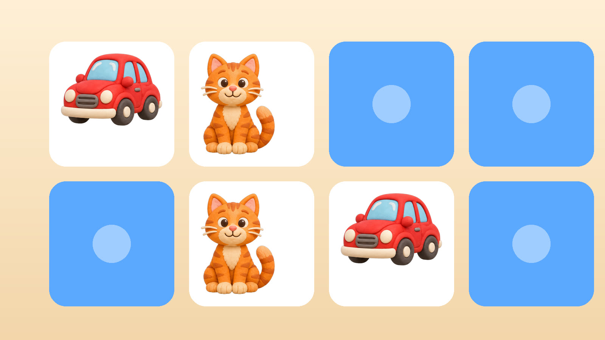

Внимание и память
- «Найди пару»: зрительное внимание и память, 4 уровня. Карточки сначала открыты, затем закрываются, пары ищем по памяти. Подписи под картинками можно включать и выключать.
- «Что звучит?»: слуховое внимание и различение неречевых звуков, выбор из трёх картинок.

Понимание ситуаций и мышление
- «Что здесь не так?»: найти нелепость, объяснить причину, исправить предложение.
- «Туалетные дела Тёмы»: последовательность действий по серии картинок, слова «сначала, потом, после».
- «Рассказываем по картинкам»: сюжетные картинки и рассказ.
Социально-эмоциональное развитие
- «Кто что чувствует?»: узнавание эмоций по лицу, объяснение причин, подбор слов в трудной ситуации. Восемь ситуаций.
Речь и понимание инструкций
- «Где мячик?»: предлоги и пространственные представления, перетаскивание мячика по инструкции.
- «Один день в детском саду»: предлоги, падежи, ответы на вопросы, рассказ; есть режимы «Обучение» и «Диагностика».
- «Чья вещь?»: согласование и падежи.
Как использовать в работе
- Подберите занятие под цель: внимание, мышление, речь или социальные навыки.
- Показывайте задания по одному и дожидайтесь ответа ребёнка.
- Используйте подсказки постепенно: сначала минимальную, затем уменьшайте.
- Закрепляйте дома: отправляйте родителям ссылку на занятие.
- Чередуйте занятия с практическими действиями и предметами, чтобы навык переносился в жизнь.
Занятия не заменяют логопедическое обследование и работу специалиста: это материал для вашей работы, а не диагностика.
Вопросы и ответы
Подходят ли занятия для детей с задержкой развития?
Занятия можно использовать как дополнительный материал в комплексной работе специалиста; подбор и уровень сложности определяете вы.
Можно ли работать со слабовидящими или слабослышащими детьми?
Это решает специалист по состоянию ребёнка. Занятия не заменяют специальные методики.
Сколько занимается ребёнок?
Короткие блоки по 5–10 минут обычно эффективнее длительных.
Статья носит общий информационный характер, не заменяет консультацию специалиста и не ставит диагноз: диагноз ставит врач. Если вы тревожитесь за ребёнка, обратитесь к педиатру, неврологу или другому врачу.
Читайте также
Для специалистовОнлайн-игры для логопедов: обзор 15 бесплатных занятий для работы с детьмиОнлайн-занятие с ребёнком держится на материале: нужна картинка, звук, действие, которое можно сделать пальцем. Собрала обзор бесплатных занятий,…Для специалистовСтимульный материал для логопеда: что нужно для занятий и как использовать его онлайнСтимульный материал — это то, на что ребёнок реагирует во время занятия: картинки, звуки, предметы, видео. От его качества зависит, захочет ли…Для специалистовОнлайн-игры на предлоги и падежи для детей с ОНР: логопеду на заметкуАграмматизм — одна из главных трудностей при ОНР: пропуски предлогов, неверные окончания, ошибки в согласовании. Работать над ним удобно в игровом…